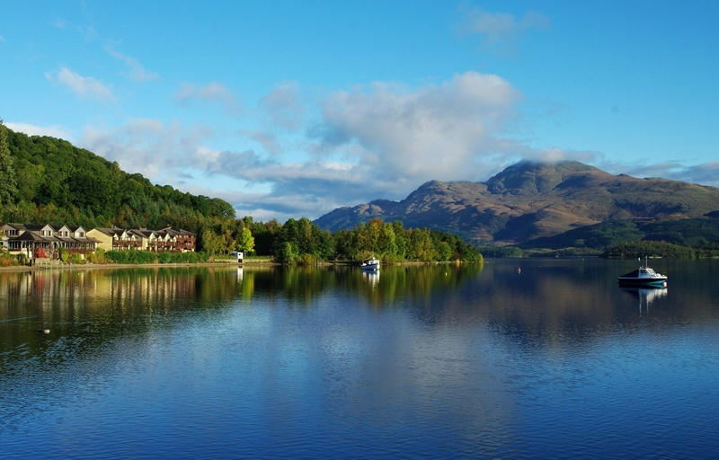
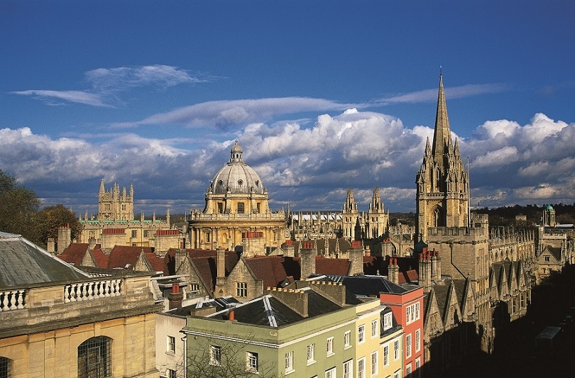

D1 上海-多哈-爱丁堡
参考航班：QR871 (23:50—04:50+1),QR029（06:40-12:10）
今日从上海浦东机场搭乘国际航班航空豪华客机飞往英国爱丁堡，夜宿飞机上。
D2 爱丁堡 晚餐
抵达后爱丁堡机场办理海关入境手续，导游在机场外接机后游览：王子大街，司各特纪念碑游
览，晚餐后入住酒店。
D3 爱丁堡 早、中、晚餐
早餐后，参观爱丁堡城堡， 继续游览：卡尔顿山，圣哲尔斯大教堂，议会和荷里路德宫，沿着皇
家大道探访历史古迹，领略那里的风土人情和音乐。
D4 圣安德鲁斯一日游 早、中、晚餐
去圣安德鲁斯，参观圣安德鲁斯老球场，一处可溯源至1325年的高尔夫球场，圣安德鲁斯小城观
光，海滨观光。
D5 爱丁堡-湖区-曼城 早、中、晚餐
乘车前往英国享有盛名的温德米尔湖区（约3.5小时），游览湖光山色的湖区国家公园，湖区小
镇，可乘坐湖区游船，蒸汽小火车，乘车前往英国著名工业城市曼彻斯特。
D6 曼城-达西庄园-斯特拉福德-牛津 早、中、晚餐
乘车前往达西庄园，到达后参观达西庄园，达西庄园建于西元1550年，占地1000多英亩，18世紀
由造景天才兰洛斯布朗所设计，后经16代后裔的整建，內部裝潢气派华丽。庄园内收藏各流派名
家画作包括17世纪意大利和法国画家所绘的巨幅油画、 雕刻等艺术品。之后前往斯特拉福德，抵
达后参观莎士比亚故居，游览爱芬河、小城风貌、莎士比亚及其作品雕塑.乘车赴牛津，住牛津。
D7 牛津-剑桥 早、中、晚餐
游览牛津大学城（外观）拥有最古老、最美丽的大学，许多人前来造访牛津的最主要原因，是这
个大学城在过去800多年中，为全世界造育出许多杰出人士。喜爱《哈利-波特》的观众一定会对
影片中霍格沃茨魔法学校那宏伟庄重、 穹顶布满星星的大餐厅印象深刻；后去剑桥游览。
D8 伦敦 早餐
自由活动不含车导（可在牛津街300号、400号，新邦德街，老邦德街，摄政街自由购物，参观大
英博物馆）
D9 伦敦 早餐
自由活动不含车导（参观伦敦塔、伦敦桥、泰晤士河游船、大本钟、西斯敏大教堂、白金汉宫、
肯辛顿宫、海德公园等）
D10 伦敦-上海 早、中餐
参考航班：QR004 (15:05—23:55)
早餐后，前往温莎城堡，之后前往希斯罗机场，办理退税后办理乘机手续经多哈返回上海。
D11 上海
参考航班：QR870（02:50-16:20）
下午抵达上海浦东机场。结束愉快的旅程。
注：如不去圣安德罗斯可减少一天，为10天。